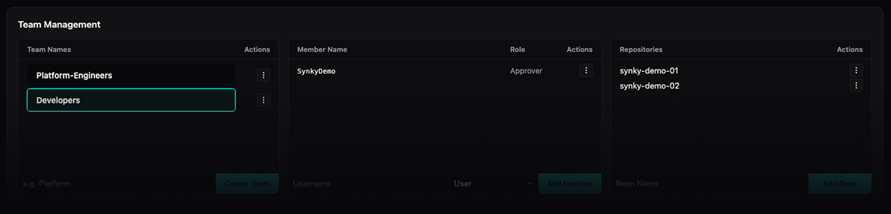
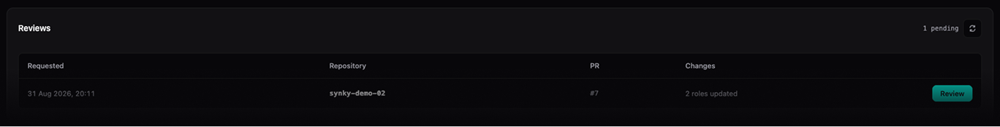
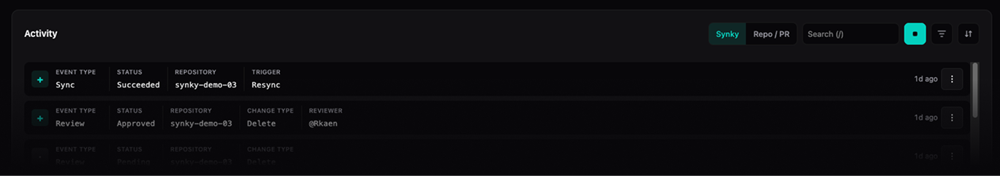

Minimal blast radius
Synky links a single role to a single deployment, with permissions tailored specifically to the resources being read, created, updated or deleted. No other GitHub organisation, repository or team may assume the role.
The problem
Maintaining a deployment role for each repository is tedious work, especially at scale. Teams often reuse a handful of powerful roles across their repositories and accept the risk of wider blast radiuses, a lack of least privilege, and a lack of auditability.
Our purpose
Synky generates least-privilege deployment roles just-in-time during GitHub Actions deployments, based on the Terraform being deployed. The roles are short-lived and are automatically revoked after the deployment completes, meaning there is no risk of a power user role being misused and per-deployment auditability is maintained.
How it works
Map repos to accounts, gate IAM changes, deploy with short-lived roles, and keep an audit trail, without standing power user roles in every account.
Bind repositories, branches, and environments to the AWS accounts they deploy to. Set least-privilege defaults and whether IAM changes need approval. Build the map in the UI or declaratively with YAML, so platform never loses track of which repo can reach which account, via which role.

Organise teams with members and designated approvers. Attach repositories so ownership stays clear as the org grows. Approvers review proposed trust and permission changes before they land in AWS. Security gets a gate without becoming the IAM ticket queue.

During the deploy phase in GitHub Actions, Synky analyses your Terraform and proposes deployment-role permission updates to match what the run actually needs. Nothing applies until you approve. Gate by environment, path, branch, or repo so material IAM diffs pause for an authorised reviewer.

At deploy time Synky sets up a short-lived deployer role, runs the plan, attaches the scoped permissions the run needs, then applies. When the job finishes, the elevated access is cleaned up. No shared power-user roles sitting in the account between deploys.
The activity feed records triggers, syncs, JIT grants, and review decisions: what changed, who approved it, and when. When audit asks who touched deployment access, the answer is already in one place instead of a spreadsheet hunt.

The benefits summed up
Synky links a single role to a single deployment, with permissions tailored specifically to the resources being read, created, updated or deleted. No other GitHub organisation, repository or team may assume the role.
Synky can gate approvals at three points. Firstly, when any changes to the Repository Map affecting a repository to account binding are triggered. Then, after any Apply or Destroy. Each gate can be independently controlled for any binding.
A centralised Repository Map allows engineers to control which path, branch, tag or environment within a repository is deployed to which AWS account, plus when approvals are required. Group repositories together and point them at the same account, or use a single account per repository, the map is flexible yet specific.
We track events from two perspectives; all changes within the UI are tracked and uniquely attributable, and all management actions performed by the deployment roles are captured and can be linked to a single deployment. All logs can be exported to easily supply to auditors.
FAQ
Bootstrap role (synky-bot) permission policy
{
"Version": "2012-10-17",
"Statement": [
{
"Sid": "DenyModifyBootstrapRole",
"Effect": "Deny",
"Action": [
"iam:DeleteRole",
"iam:UpdateRole",
"iam:UpdateAssumeRolePolicy",
"iam:PutRolePolicy",
"iam:DeleteRolePolicy",
"iam:AttachRolePolicy",
"iam:DetachRolePolicy",
"iam:PutRolePermissionsBoundary",
"iam:DeleteRolePermissionsBoundary",
"iam:TagRole",
"iam:UntagRole",
"iam:PassRole"
],
"Resource": "arn:aws:iam::ACCOUNT_ID:role/synky-bot"
},
{
"Sid": "DenyUntagSynkyManaged",
"Effect": "Deny",
"Action": "iam:UntagRole",
"Resource": "arn:aws:iam::ACCOUNT_ID:role/synky-run-*",
"Condition": {
"ForAnyValue:StringEquals": {
"iam:TagKeys": ["synky:managed"]
}
}
},
{
"Sid": "ManageGitHubOidcProvider",
"Effect": "Allow",
"Action": [
"iam:CreateOpenIDConnectProvider",
"iam:DeleteOpenIDConnectProvider",
"iam:GetOpenIDConnectProvider",
"iam:TagOpenIDConnectProvider",
"iam:UntagOpenIDConnectProvider",
"iam:UpdateOpenIDConnectProvider",
"iam:AddClientIDToOpenIDConnectProvider",
"iam:RemoveClientIDFromOpenIDConnectProvider",
"iam:UpdateOpenIDConnectProviderThumbprint"
],
"Resource": "arn:aws:iam::ACCOUNT_ID:oidc-provider/token.actions.githubusercontent.com",
"Condition": {
"StringEquals": {
"iam:ResourceTag/synky:managed": "true"
}
}
},
{
"Sid": "ManageSynkyRunRoles",
"Effect": "Allow",
"Action": [
"iam:CreateRole",
"iam:DeleteRole",
"iam:GetRole",
"iam:UpdateRole",
"iam:UpdateAssumeRolePolicy",
"iam:PutRolePolicy",
"iam:DeleteRolePolicy",
"iam:GetRolePolicy",
"iam:ListRolePolicies",
"iam:ListAttachedRolePolicies",
"iam:PutRolePermissionsBoundary",
"iam:DeleteRolePermissionsBoundary",
"iam:TagRole",
"iam:UntagRole"
],
"Resource": "arn:aws:iam::ACCOUNT_ID:role/synky-run-*",
"Condition": {
"StringEquals": {
"iam:ResourceTag/synky:managed": "true"
}
}
},
{
"Sid": "ManageSynkyPermissionsBoundary",
"Effect": "Allow",
"Action": [
"iam:CreatePolicy",
"iam:DeletePolicy",
"iam:GetPolicy",
"iam:GetPolicyVersion",
"iam:ListPolicyVersions",
"iam:CreatePolicyVersion",
"iam:DeletePolicyVersion",
"iam:SetDefaultPolicyVersion",
"iam:TagPolicy"
],
"Resource": "arn:aws:iam::ACCOUNT_ID:policy/synky-permissions-boundary"
},
{
"Sid": "ManageSynkyRunPolicies",
"Effect": "Allow",
"Action": [
"iam:CreatePolicy",
"iam:DeletePolicy",
"iam:GetPolicy",
"iam:GetPolicyVersion",
"iam:ListPolicyVersions",
"iam:CreatePolicyVersion",
"iam:DeletePolicyVersion",
"iam:SetDefaultPolicyVersion",
"iam:TagPolicy",
"iam:UntagPolicy",
"iam:ListEntitiesForPolicy"
],
"Resource": "arn:aws:iam::ACCOUNT_ID:policy/synky-run-*"
},
{
"Sid": "AttachSynkyRunPolicies",
"Effect": "Allow",
"Action": [
"iam:AttachRolePolicy",
"iam:DetachRolePolicy"
],
"Resource": "arn:aws:iam::ACCOUNT_ID:role/synky-run-*",
"Condition": {
"StringEquals": {
"iam:ResourceTag/synky:managed": "true"
},
"ArnLike": {
"iam:PolicyARN": "arn:aws:iam::ACCOUNT_ID:policy/synky-run-*"
}
}
},
{
"Sid": "ReadIamForDiscovery",
"Effect": "Allow",
"Action": [
"iam:GetOpenIDConnectProvider",
"iam:ListOpenIDConnectProviders",
"iam:GetRole",
"iam:GetRolePolicy",
"iam:ListRoles",
"iam:ListRoleTags",
"iam:ListAttachedRolePolicies",
"iam:ListInstanceProfilesForRole"
],
"Resource": "*"
}
]
}